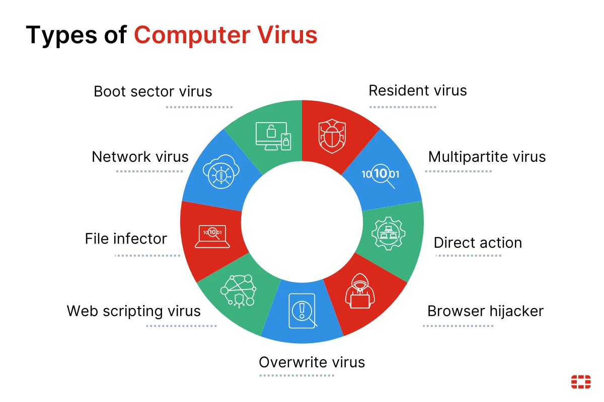

Virus
Malicious code requiring a host file and human action (like opening an attachment) to execute and spread by copying itself into other files. Its goal is typically to corrupt or delete data.
Malicious code requiring a host file and human action (like opening an attachment) to execute and spread by copying itself into other files. Its goal is typically to corrupt or delete data.
A standalone program that operates and self-replicates independently across networks by exploiting vulnerabilities without needing a host file. It often consumes bandwidth and causes system crashes.
Malicious software disguised as a legitimate program that relies on social engineering to trick users. It does not self-replicate, but rather aims to steal sensitive data or create backdoors
